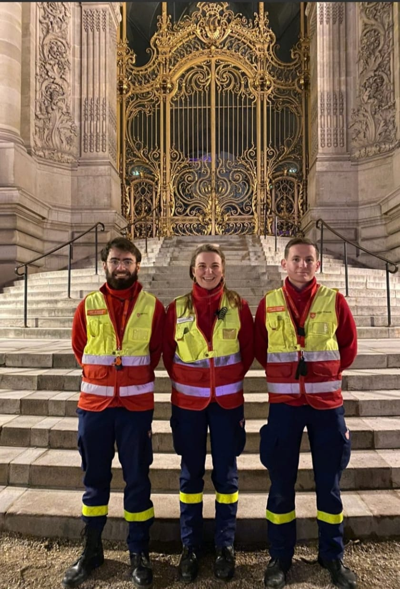

Personal Project
Order of malte
The Emphore student co-coursing platform won over the jury for its ability to innovate in a seemingly saturated market. My fellow students have developed a connected drive application enabling one student to pick up the drives of several other students in his or her hall of residence.

This system promotes a collaborative and social model for students who are often far from supermarkets.
I particularly enjoyed working on the legal aspects of our organization, and my work was recognized by the jury.
My team and I were delighted to be awarded the jury's Coup de Coeur prize. This award is just the first step in our project, and I'm particularly looking forward to extending our project, which is already benefiting certain schools in Lille, to new towns.
Marathon
The Emphore student co-coursing platform won over the jury for its ability to innovate in a seemingly saturated market. My fellow students have developed a connected drive application enabling one student to pick up the drives of several other students in his or her hall of residence.

This system promotes a collaborative and social model for students who are often far from supermarkets.
I particularly enjoyed working on the legal aspects of our organization, and my work was recognized by the jury.
My team and I were delighted to be awarded the jury's Coup de Coeur prize. This award is just the first step in our project, and I'm particularly looking forward to extending our project, which is already benefiting certain schools in Lille, to new towns.